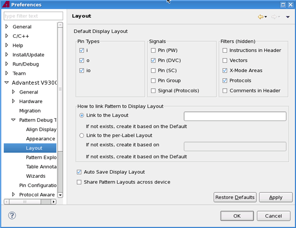

Layout preference page
You can change the following preferences on the preference page.
Option |
Description |
|---|---|
Default Display Layout |
Specify the elements to be shown and not shown on the default display layout of the Pattern Editor. |
How to link Pattern Label to Display Layout |
|
Auto Save Display Layout |
Specify whether the layout of the Pattern Editor is automatically saved with every layout change. When you open a pattern, the last saved display layout is used. |
Share Pattern Layouts across device |
Specify whether to save the layout independently of the pattern (master) file. To activate a change of the setting you must close and reopen all pattern editors and the pattern explorer. We recommend to decide on a setting once. Switching the setting during a project may cause unclear layout usage. Note that you can import pattern editor layouts using the Layout Import Wizard. |
The Layout preference page:

Functional changes
- Introduced in SmarTest 6.5.2
- SmarTest 6.5.3: Option to share layouts across device